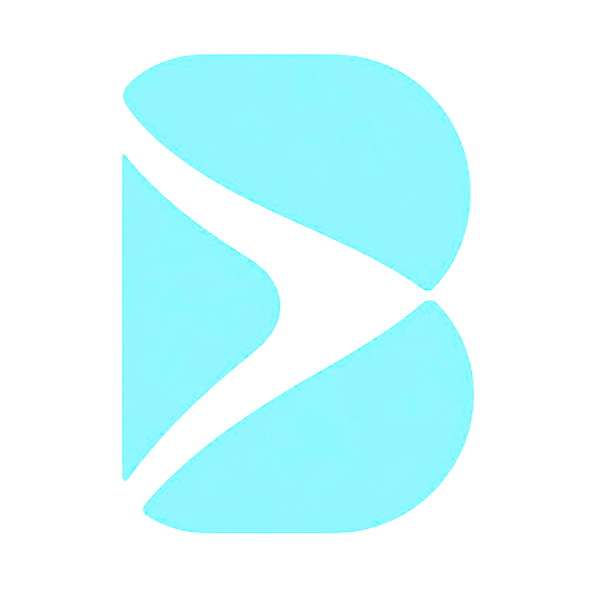
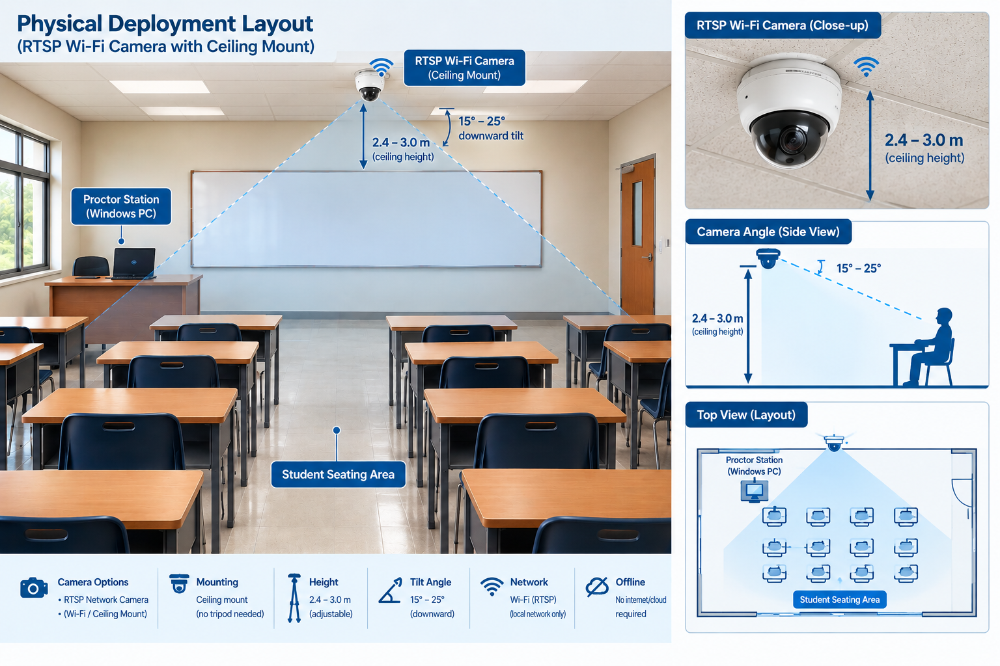
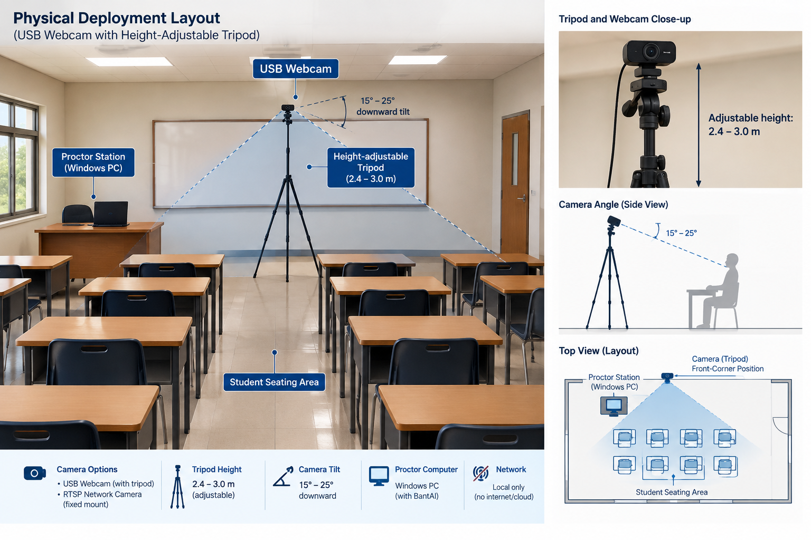

Camera Acquisition
Acquires frames from local USB UVC webcams or RTSP IP cameras with TCP-preferred fallback. Entirely offline.

Offline, AI-assisted monitoring for exam rooms. BantAI surfaces evidence while every final judgment stays with the proctor.
A four-stage pipeline from raw camera input to proctor-validated decisions — all executed locally.
Acquires frames from local USB UVC webcams or RTSP IP cameras with TCP-preferred fallback. Entirely offline.
Downscaled whole-room pass via YOLOv8n, then crop-and-recheck at full resolution to suppress false positives.
Single watermarked JPEG snapshots written at flag time. No continuous recording. Auto-purged on schedule.
Flags surface on the proctor dashboard. Confirm, dismiss, or annotate — every decision is audit-logged.
Privacy-compliant, CPU-optimized architecture purpose-built for commodity institutional hardware.
BantAI operates strictly as a decision-support console. It flags observable anomalies — sustained head turns, prohibited items, unusual movement — and surfaces watermarked evidence to the proctor dashboard.
100% air-gapped on-premises execution. Zero facial recognition or biometric matching. Zero audio capture. No continuous video storage — only single-frame evidence at flag time.
RA 10173 CompliantByteTrack maintains persistent track IDs for up to 40–45 students simultaneously. A 5-second Spatial Memory Rebinding window recovers lost tracks through temporary occlusion — no class roster required.
Cascading geometric head-turn detection: Tier 1 ear–nose yaw, Tier 2 eye–nose fallback, Tier 3 profile geometry under heavy occlusion. Robust across desks, arms, and partial visibility.
Generates official, print-ready Final Incident Reports with institutional branding, embedded watermarked snapshots, proctor annotations, and Guidance Office disclaimer blocks.
Live Session, Sessions archive, Incidents inspector, Reports, Settings, and Replay Library — each a full workspace with master-detail navigation and a dual light/dark theme.
Three built-in presets balance detection sensitivity against false positive suppression. Custom sliders are available in Settings.
Shortest head-turn duration threshold and lowest movement magnitude. Designed for high-integrity controlled environments.
Moderate duration and movement thresholds. Tuned for typical Philippine classroom conditions and general exam use.
Longest duration threshold and highest movement magnitude. Suited for accommodative contexts with lower alert volume.
BantAI supports flexible camera configurations depending on your classroom's constraints. Optimal placement ensures high-confidence pose estimation.


Engineered to run efficiently on standard institutional hardware — no GPU required.
| Component | Minimum | Recommended |
|---|---|---|
| Operating System | Windows 10 64-bitv1809+ | Windows 10 / 11 64-bit |
| Processor | x86_64 Dual-Core @ 2.0 GHzSSE4.2 / AVX | x86_64 Quad-Core @ 2.5 GHz+AVX2 |
| Memory | 4 GB RAM | 8 GB RAM or higher |
| Storage | 2 GB freeNTFS / FAT32 | 5 GB freeSSD |
| Display | 1280 × 720 (HD) | 1920 × 1080 (Full HD) |
| Camera | 720p USB 2.0 UVC @ 30 FPS | 1080p USB 3.0 or RTSP IP camera |
| Network | Fully offlineAir-Gapped | Fully offlineAir-Gapped |
Download BantAI and give your proctors a monitoring support tool that stays offline, private, and fully under their control.
Download for Windows